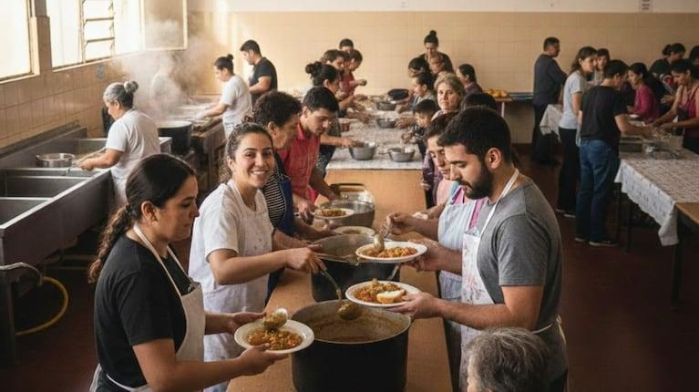

Bienvenidos A Nuestra Comunidad
En Red Asistencia Solidaria trabajamos para brindar ayuda a personas en situación de vulnerabilidad, ofreciendo apoyo alimentario, acompañamiento social y campañas solidarias. Nuestro compromiso es generar un impacto positivo en la comunidad, promoviendo la inclusión, la igualdad de oportunidades y el acceso a recursos básicos para una mejor calidad de vida.
Nuestros Valores
- Solidaridad
- Compromiso
- Empatia
- Trabajo en Equipo
- Liderazgo

Proyectos
Comedores Moviles:

A través de nuestros comedores móviles, recorremos distintos barrios brindando alimentos calientes a personas en situación de calle. Además de la asistencia alimentaria, buscamos generar un espacio de contención y acompañamiento, escuchando las necesidades de cada persona y orientándolas hacia otros recursos disponibles.
Campañas de Donaciones:

Organizamos campañas solidarias para recolectar ropa, calzado y alimentos no perecederos. Estas donaciones son clasificadas y distribuidas entre familias que atraviesan situaciones económicas difíciles, priorizando a niños, adultos mayores y personas en riesgo social.
Acompañamiento Social:

Brindamos acompañamiento social a personas que necesitan orientación para mejorar su calidad de vida. Esto incluye asesoramiento, contención emocional y apoyo en la búsqueda de empleo, facilitando herramientas que permitan una inserción más efectiva en la sociedad. Nuestro objetivo es no solo asistir en el presente, sino también generar oportunidades que permitan a las personas construir un futuro más digno.